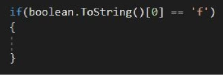
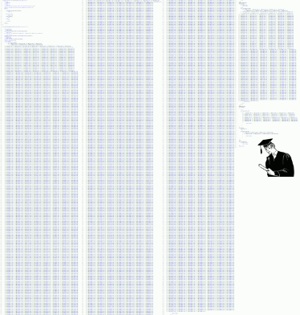
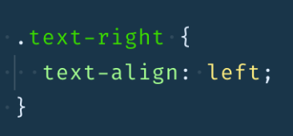
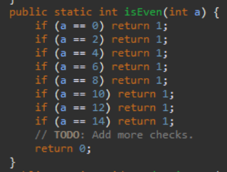
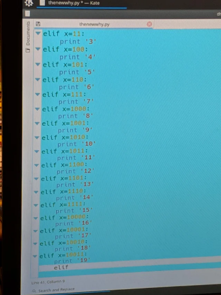

| Här har vi samlat de bästa (värsta), kod exemplen vi har hittat | |||
|---|---|---|---|
| Num | Bild på fulkod | Senaste kommentaren | Rating utav medlammar |
| 1. |  | Detta är särskilt dåligt eftersom konverteringen av ett boolvärde till strängen i C# kommer att returnera antingen Sant eller Falskt och därmed inte matcha en liten bokstav. Detta är härligt. | ⭐⭐⭐⭐⭐ |
| 2. |  | Känner mig så bra med mig själv just nu, oavsett hur dålig jag är eller var har jag ALDRIG lagt ut kod som den här, så jag antar att jag har det som händer för mig. Jag undrar om han / hon lider av Impostorsyndrom. | ⭐⭐⭐⭐⭐ |
| 3. |  | Du var tänkt att skapa balans på stilbladet, inte förstöra det! | ⭐⭐⭐⭐ |
| 4. |  | Man detta fick mig att skratta så hårt. Jag tror inte att todo kommer att gå någonstans snabbt 😂 | ⭐⭐⭐ |
| 5. |  | Vid vilken tidpunkt misslyckas en sådan person med datavetenskapsprogrammet? Jag är trött på att träffa nyutbildade "utvecklare" utan att förstå vad de gör. Jag tror inte att skriva kod på professionell nivå är för alla, och att misslyckas med dem så snart som rimligt verkar som om det skulle vara en vänlighet. | ⭐⭐ |